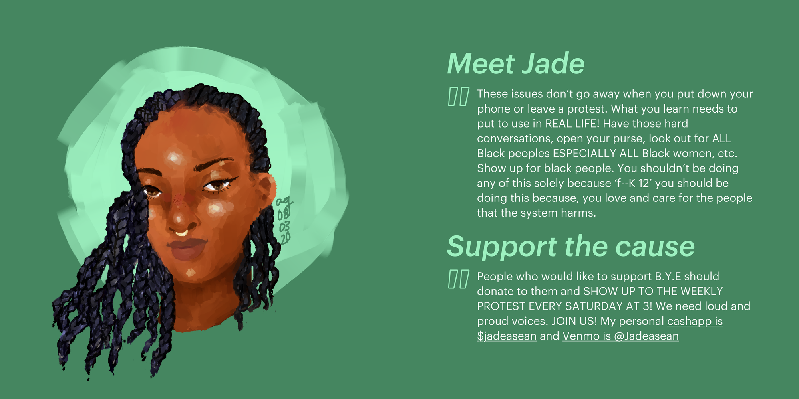

Art
The Draw Attention Project

I have always been really interested in art and love to draw and paint. With all of the things going on in the world — from the COVID-19 pandemic to the protests — it can be hard to focus on the fact that there are real people involved, organizing and fighting on the frontlines. I wanted to help draw attention to their efforts and directly get out information about how to support them. That's why I created the Draw Attention project: an ongoing series of portraits of essential workers and community organizers.
When I feature someone, I ask for a quote to include about their experience and how to support them, and also ask for a charity or personal account that people can donate to (ex. Mutual aid funds, a personal venmo or cashapp), so that I can boost it. Through the project, I’ve been able to talk to and hear from so many amazing people. It’s been a great experience to be able to reach out to the workers who are on the frontlines and hear, directly from them, about sustainable, tangible, and direct ways to help.
If you're interested in being featured (or know someone else who'd like to be featured), please email me at amu.garimella@gmail.com, or reach out to me on Instagram @art.mulya.
You can check out my art Instagram, where I post the portraits, here!
You can check out the Facebook page here!
Featured in:
- I'm honored to be selected as one of the six finalists of the Art to Activism competition. I got the opportunity to talk on a panel with the rest of the finalists, my work was featured in the Mattress Factory digital and physical gallery, and was put up for sale in the Mattress Factory store. All proceeds were donated to featured activists.
- I'm thrilled with the amazing opportunity to display my work in Oakland's Forbes Digital Plaza. Stay tuned!
- I got the chance to discuss my art, activism, and youth organizing on the #Vote4OurFuture Pittsburgh Community Activist roundtable. #Vote4OurFuture is a campaign run by Zero Hour and the National Children's Campaign aimed at amplifying youth voices.
- I wrote about my art and thoughts on activism for Health Righters magazine, a multidisciplinary publication covering health and human rights issues all over the world.